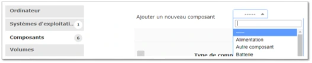
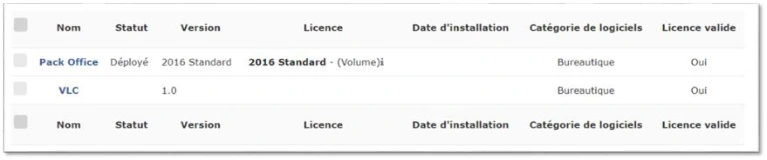
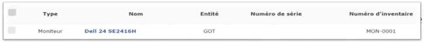
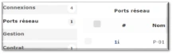
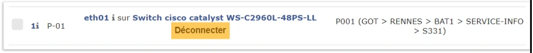
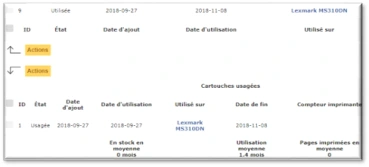
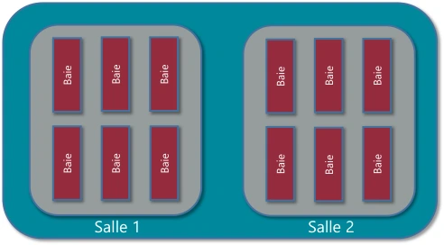
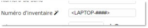
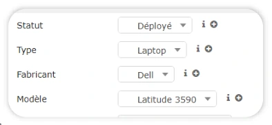

Transcription fidèle du support de formation, avec mise en forme adaptée à la lecture. Les identifiants secrets du laboratoire sont remplacés par une indication du formateur ; les coquilles techniques sont expliquées séparément dans le cours optimisé.
Vue détaillée, connexions, etc.
| Type | Service Organisation | Date achat | Index |
|---|---|---|---|
| PC | DIR | 202203 | 012 |
| Ordinateur fixe | Direction | Mars 2022 | N° 012 |


Créer les licences.
de logiciel.
créer la version.
le logiciel et l’éditeur.
à un éditeur et à une catégorie.
à un ordinateur.
d’exploitation.

Le port réseau « 1 » de mon ordinateur est raccordé à la prise « p001 » en S331 qui ensuite est raccordée au port réseau « eth01 » d’un switch cisco



Exemple : imprimante USB HP
Exemple : Cart-impr-HP.
Puis associer le modèle de cartouche à votre modèle d’imprimante.
Exemple : 50 cartouches neuves
L’imprimante doit être du même modèle d’imprimante que les cartouches.
de cartouche.
modèle.
imprimante.
Exemple : Cart-impr-HP.
que les cartouches.
d’imprimante.

| Action | Effet |
|---|---|
| Autoriser les réservations | Rendre un élément réservable |
| Rendre indisponible | Plus de nouvelles réservations possibles |
| Rendre disponible | Rétablir la possibilité de réserver |
| Ne pas autoriser | Désactiver les réservations |


données.
les images dans le modèle de matériel.
Exemple : Datacenter L.A.
pour la baie.
Exemple :